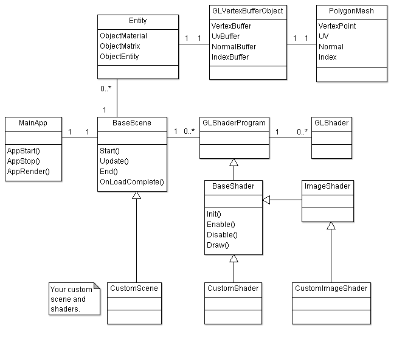

This document provides a high-level overview of the Nutty Open WebGL Framework to help you understand where, when, and how the web application functions. This document does not provide an in-depth review of the source code. It is left to you to study the source code should you wish to use it for purposes outside the scope of the web application it was created with.
The source code utilizes the Nutty Open Framework, which is an open sourced, simplified version of the closed source Nutty Framework. It is released under a modified MIT license, so you are free to use if for personal and commercial purposes. The source is provided to help you study and understand the mechanics of the web application created with it. It was not created for the purposes of starting another open source game engine project.
The following class diagram illustrates the high-level view of the important components involved in the web application. Each component will be discussed in detail below.

This file contains the entry and exit points of the web application. The appStart() function is called to initialize WebGL with the HTML Canvas element. Typically this is done when the onload event is dispatched from the HTML body element. This function will call the Start() method of your scene, which is where you would put your initialize code. Once the web app starts, it will periodically call the appRender() function. This method is called roughly 60 times per second. At each frame, the Update() method of your scene is called. At this point you would perform any app logic and render your objects to the canvas element. This method will continue to execute until the appStop() function is called, usually when the user leaves the web page and the HTML body dispatches the onunload event. At this point you should properly unload any resources such as VBOs, FBOs, textures, etc.
All your custom scenes should derive from the BaseScene class. You should override the Start, Update, End, and OnLoadComplete methods. You should perform any initialization logic in your Start method, such as creating new entities, setting up lights, downloading files from the web, etc. OnLoadComplete is called once all your resources have been downloaded from the web. From here you will need to initialize your shader programs and setup any texture objects that were downloaded. The Update method will continue to execute so long as the web app remains active. You will draw your entities in this method as well as perform any additional web app logic per frame. Finally, the End method is called when your scene is being destroyed. You should cleanup any GL specific resources you created to avoid memory leaks in a user's browser.
The root of a shader is the GLShaderProgram, which is essentially a high-level class for dealing with GL shader objects and programs. Every shader program in WebGL needs exactly 1 vertex and 1 fragment shader. The BaseShader extends the GLShaderProgram class by providing properties and logic common in most shader programs that render geometry. In addition to the BaseShader class, there is also an ImageShader class, which serves as the base for all post-processing shader programs. The following steps are required when working with shader programs.
1. Create GLShader objects for your vertex and fragment shaders.
2. Create a new GLShaderProgram object that will load your shaders at runtime.
3. Add the vertex and fragment shaders (see class GLShader) to the program.
4. Initialize the shader program by calling the Init method. This is a one-time process where your shader classes should extract all the attribute and uniform variable ids from the shader.
5. Enable the shader when in use. This will setup the attribute variables used by the shader. You can also supply one-time uniform variable updates in this call that will be shared by all subsequent draws. This improves performance as you will not need to update these variables each time when the Draw method is called.
6. Call the Draw method to render an entity to the screen. This method will set any dynamic attribute and uniform variables required by the shader before the draw call is made.
The following describes the source code directory structure.
|
src / app |
This folder contains the application code. This is code created specifically for the purpose of the application, which includes any visual scenes and shader objects. All loading, user interface management, and drawing happens here. |
|
src / jquery |
This folder contains the optimized jQuery source code. It is used solely for creating and using HTML based controls. |
|
src / ca / nutty |
This folder contains the source code for the Nutty Open Framework library. It contains a set of high-level JavaScript “classes” that make working with OpenGL and 3D geometry easier. |
|
src / ca / nutty / Entity |
Entities are items in the game world such as meshes, lights, and materials. |
|
src / ca / nutty / Geometry |
Contains classes for creating and managing 3D meshes. The folder also contains classes for constructing various primitives. |
|
src / ca / nutty / GL |
Contains classes for working with WebGL, such as high-level classes for dealing with GL textures, shaders, vertex buffer objects, and frame buffer objects. |
|
src / ca / nutty / Http |
High-level classes for communicating with a website using AJAX. |
|
src / ca / nutty / Math |
Classes for working with matrices and vectors. |
|
src / ca / nutty / Resource |
Classes for storing resource items loaded by a scene. |
|
src / ca / nutty / Scene |
Contains a BaseScene class for which all of your scenes will derive from. It contains logic for loading files and initializing certain WebGL parameters. |
|
src / ca / nutty / Shader |
Contains two types of base shaders. BaseShader is used for rendering scenes with geometry, such as a standard 3D world. The ImageShader is used for post-processing effects where your scene is rendered to a texture object first and then post-processed as an image later. It provides information to the fragment shader regarding the size of the image and texels. |